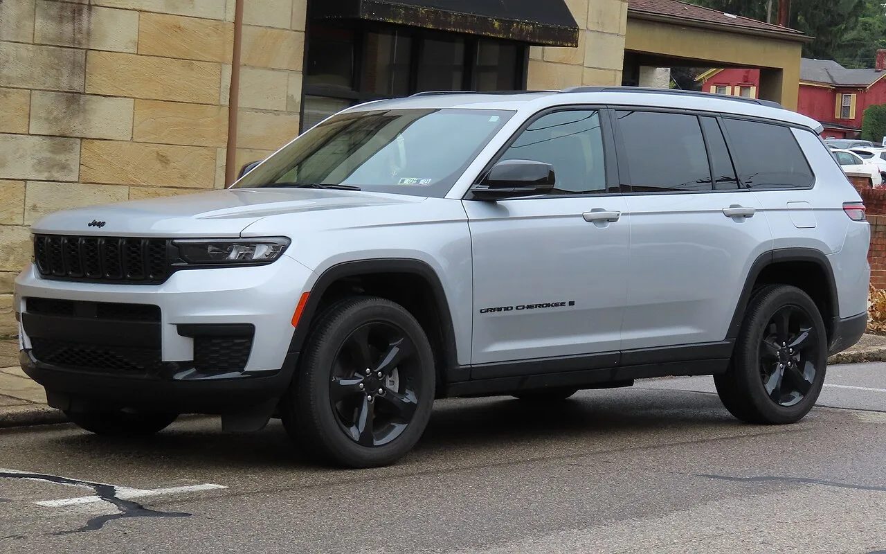
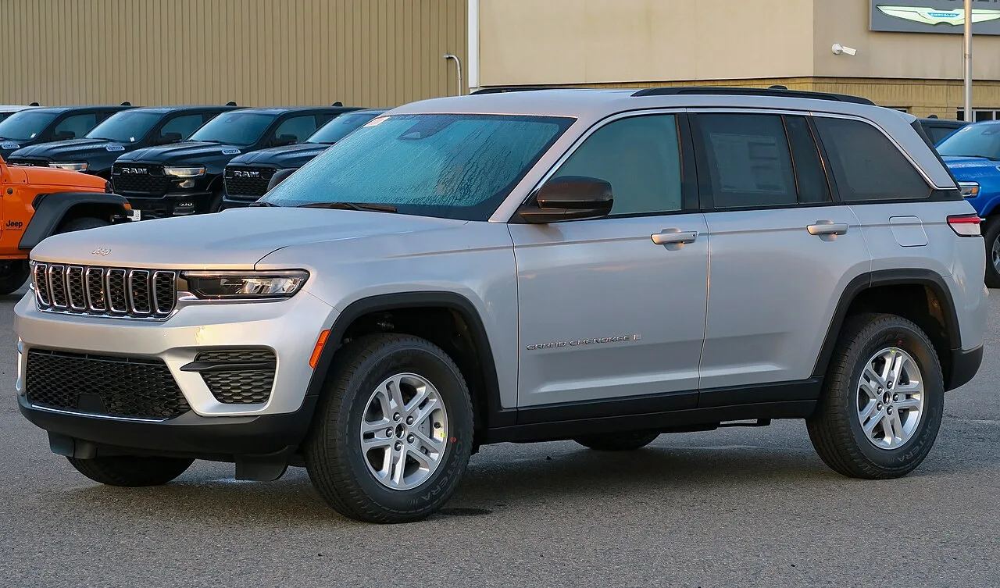
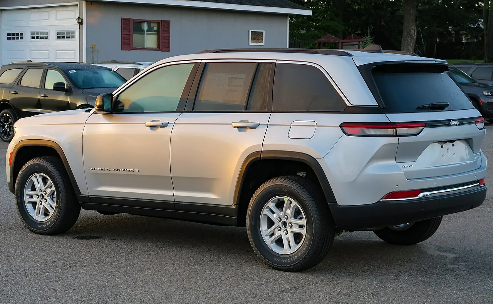
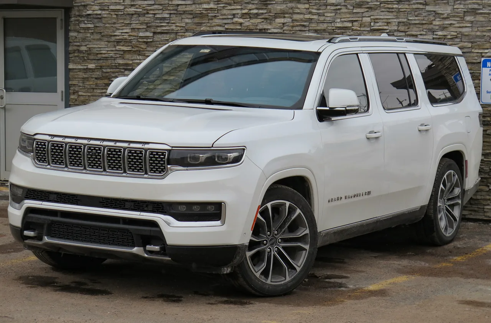

▲ 지프가 2.0리터 허리케인4 터보 엔진을 얹은 신형 그랜드 체로키 L을 이달 말 국내에 출시한다
배기량은 3.6리터에서 2.0리터로 줄었는데, 힘은 오히려 세졌다. 지프가 2.0리터 터보 엔진을 얹은 신형 그랜드 체로키 L을 이달 말 국내에 출시한다.
오토헤럴드 보도에 따르면 지프는 신형 그랜드 체로키 L을 이달 말 국내 시장에 선보인다. 가장 큰 변화는 파워트레인이다. 기존 3.6리터 V6 자연흡기 엔진 대신 2.0리터 허리케인4 터보 엔진을 새로 얹었는데, 배기량이 약 44% 줄었음에도 출력과 토크는 오히려 기존 엔진을 웃돈다.
1. 배기량은 줄고 힘은 세진 2.0리터 허리케인4 터보
신형 그랜드 체로키 L에 새로 탑재되는 엔진은 2.0리터 허리케인4 터보다. 오토헤럴드에 따르면 이 엔진은 최고출력 329PS, 최대토크 45.89kg·m를 낸다. 기존에 탑재됐던 3.6리터 V6 자연흡기 엔진의 최고출력 286PS, 최대토크 35.1kg·m와 비교하면 배기량은 약 44% 줄었지만 출력은 15%, 토크는 31% 늘어난 수치다.
미디어데일과 오토레이싱 등 다른 매체의 보도를 종합하면, 이 엔진에는 F1 등 모터스포츠에서 쓰이던 터뷸런트 제트 점화(TJI·Turbulent Jet Ignition) 기술이 양산 엔진 최초로 적용됐다. 예연소실에서 점화된 화염이 주연소실로 분사돼 연소 효율을 높이는 방식으로, 가변 지오메트리 터보차저(VGT)와 맞물려 낮은 rpm 구간에서도 즉각적인 토크를 낸다. 실제로 최대토크의 90%를 2600~5600rpm의 넓은 구간에서 그대로 활용할 수 있어, 일상 주행에서 체감되는 반응성이 기존 V6보다 개선됐다는 평가다.
| 항목 | 2.0ℓ 허리케인4 터보(신형) | 3.6ℓ V6 자연흡기(기존) |
|---|---|---|
| 최고출력 | 329PS | 286PS |
| 최대토크 | 45.89kg·m | 35.1kg·m |
| 배기량 변화 | 약 44% 감소(3.6ℓ → 2.0ℓ) | |
| 최대 견인 능력 | 2812kg (동일) | |
다운사이징 터보 엔진이 자연흡기 대형 배기량 엔진을 출력·토크 모두에서 앞서는 사례로, 지프가 최근 왜건니어·그랜드 체로키 라인업 전반에 확대 적용하고 있는 허리케인4 엔진 전략의 연장선으로 풀이된다. 견인 능력은 최대 2812kg으로 기존 모델과 동일하게 유지돼, 힘은 세지면서도 실용성은 그대로 가져간 셈이다.

▲ 그랜드 체로키 L은 3열 시트를 갖춘 대형 SUV로, 지프 라인업에서 패밀리카 수요를 겨냥한 모델이다
2. 이달 말 국내 출시… 트림·가격은 추후 공개
신형 그랜드 체로키 L의 국내 출시 시점은 이달 말로 확인됐다. 오토헤럴드는 해당 모델이 이달 국내에 출시된다고 전했으나, 세부 트림 구성과 국내 판매 가격은 기사 시점 기준 아직 공개되지 않았다. 아주경제, 미디어데일, 오토스파이넷 등 후속 보도를 확인한 결과도 마찬가지로 국내 트림 구성과 가격은 "미정"이라고 전하고 있어, 정확한 사양은 스텔란티스코리아·지프 공식 발표 시점에 별도 확인이 필요하다.
배기량 다운사이징은 가격표 밖에서도 실익이 있다. 오토스파이넷 보도에 따르면 배기량이 3.6리터에서 2.0리터로 줄면서 배기량 기준으로 부과되는 자동차세도 연간 약 42만원 줄어들 것으로 추산된다. 대형 3열 SUV를 유지하는 비용 부담을 낮출 수 있다는 점에서 실사용자 입장에서는 눈에 띄는 변화다.

▲ 지프는 그랜드 체로키 라인업 전반에 허리케인4 터보 엔진과 4xe 플러그인 하이브리드 등 파워트레인 다변화를 이어가고 있다

▲ 지프 특유의 7슬롯 그릴은 신형 그랜드 체로키 L에도 그대로 이어진다
📍 왜 다운사이징 터보를 택했나
배기량을 줄이면서도 출력·토크를 끌어올리는 다운사이징 터보 전략은 최근 완성차 업계의 공통된 흐름이다. 연비와 배출가스 규제에 대응하면서도 동력 성능을 유지하거나 높이려는 목적으로, 지프 역시 그랜드 체로키 L에 2.0리터 허리케인4 터보를 적용해 3.6리터 V6 자연흡기 대비 더 나은 수치를 확보했다.

▲ 신형 그랜드 체로키 L은 최대 견인 능력 2812kg을 기존 모델과 동일하게 유지했다

▲ 지프는 그랜드 왜건니어 L 등 다른 대형 3열 SUV 라인업에도 허리케인4 터보 기반 다운사이징 전략을 확대 적용하고 있다
3. 요약
지프가 2.0리터 허리케인4 터보 엔진을 얹은 신형 그랜드 체로키 L을 이달 말 국내에 출시한다. 최고출력 329PS, 최대토크 45.89kg·m로 기존 3.6리터 V6(286PS·35.1kg·m) 대비 배기량은 약 44% 줄었지만 출력은 15%, 토크는 31% 늘었다.
최대 견인 능력은 2812kg으로 기존 모델과 동일하게 유지되며, 배기량 감소로 자동차세도 연간 약 42만원 줄어들 것으로 추산된다. 다만 국내 트림 구성과 가격은 여러 매체의 후속 보도에서도 여전히 확인되지 않아, 정확한 사양은 공식 출시 시점에 별도 확인이 필요하다.